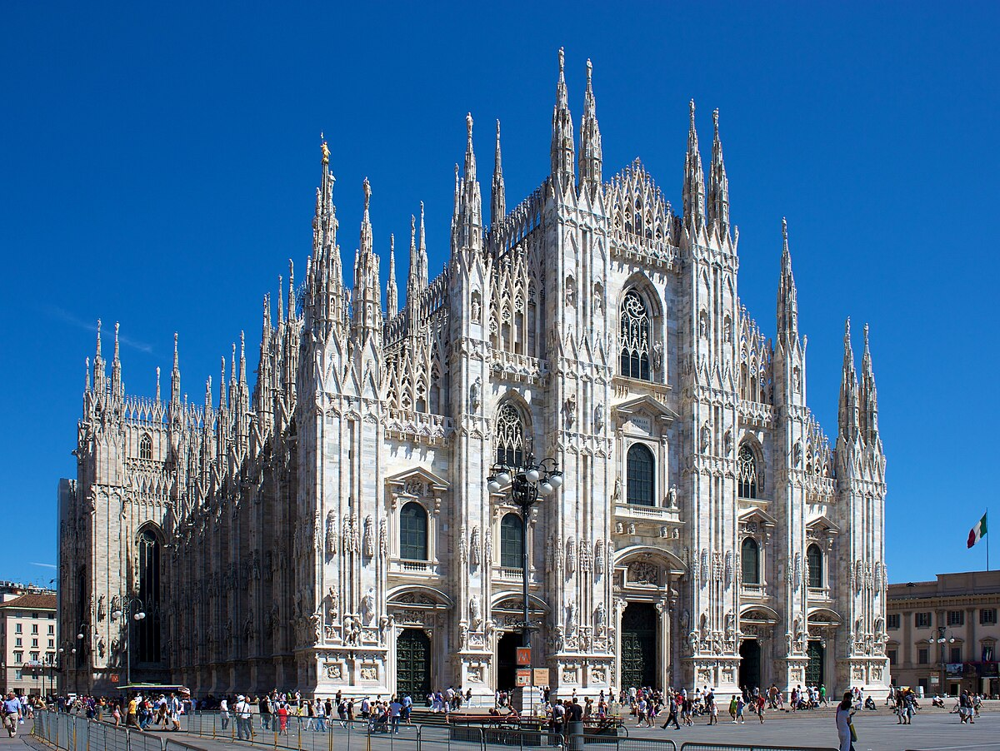

The Eternal City, home to the colosseum, Vatican City, and centuries of layered history
Top 3 Places to Visite In Rome
The colosseum. Gladiator battles, imperial drama, and ancient engineering, this amphitheater is
the soul of Roman spectacle.
The Vatican Museum and Sisten Chapel. Home to Michelangelo’s Last Judgment, Raphael’s rooms, and
centuries of papal art. Don’t miss St. Peter’s Basilica
while you’re there
A 2,000-year-old temple with a perfect hemispherical dome and an oculus that opens to the
heavens. It’s architectural
poetry.
Venice
A romantic maze of canals, bridges, and Byzantine architecture
Top 3 Places to Visite In Venice
St. Mark’s Basilica. A golden, mosaic-covered masterpiece of Byzantine architecture. Don’t
miss the Pala d’Oro, a jewel-encrusted altarpiece, and the view from the terrace overlooking Piazza San Marco.
Doges palace. Once the seat of Venetian power, this Gothic palace is filled with grand
chambers, secret prisons, and the famous
Bridge of Sighs. Walk the same halls where the Doges ruled and intrigue brewed.
The Rialto Bridge and Market Place.Is the oldest bridge across the Grand Canal, lined with
shops and stunning views. Nearby, the Rialto Market buzzes with fresh produce, seafood, and Venetian life.
perfect for soaking in the city’s
rhythm.
Florence
Cradle of the Renaissance, with masterpieces like Michelangelo’s David and Botticelli’s Birth of
Venus
Top 3 Places to Visite In Venice
The Uffizi Gallery. Home to Botticelli’s Birth of Venus, da Vinci, Michelangelo, and
Caravaggio, it’s the Louvre of Italy. The building itself is a Renaissance masterpiece, and the views of the
Arno River from the upper floors are sublime.
Piazza della Signoria & Palazzo Vecchio. Florence’s political heart for centuries,
surrounded by statues like Perseus with the Head of Medusa and a replica of
David.Palazzo Vecchio is a fortress-palace with secret passages and frescoed chambers, perfect for a
writer’s imagination.
Florence Cathedral (Duomo di Firenze). Brunelleschi’s dome is an engineering marvel. Climb
to the top for panoramic views of terracotta rooftops and Tuscan
hills. Inside, the frescoes of The Last Judgment swirl above you like a celestial vortex
Milan
Italy’s fashion and design capital, also home to Da Vinci’s Last Supper
Top 3 Places to Visite In Milan
Santa Maria delle Grazie & The Last Supper.- This humble-looking church hides one of the world’s greatest masterpieces: Leonardo da Vinci’s The Last Supper. You’ll need to book tickets in advance — viewing time is limited, but unforgettable.
Duomo di Milano. Florence’s political heart for centuries, A gothic marvel with 135 spires and thousands of statues. Climb to the rooftop for surreal views across Milan’s
skyline. It took nearly six centuries to complete — and it’s worth every step.

Galleria Vittorio Emanuele II. Brunelleschi’s dome is an engineering marvel. Climb Italy’s oldest shopping arcade, with soaring glass ceilings and mosaic floors. Sip espresso under the dome or spin on the bull mosaic for good luck (local tradition!).


_Doge's_Palace_and_campanile_of_St._Mark's_Basilica_facing_the_sea.jpg)


.jpeg)